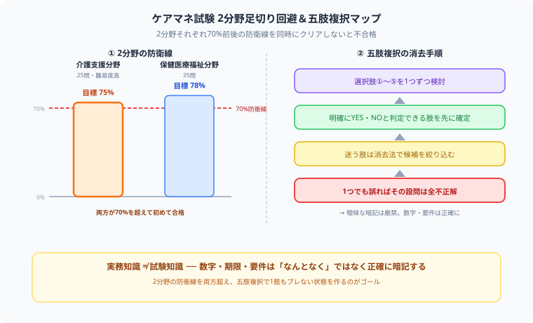

ケアマネジャー試験（介護支援専門員）独学合格ガイド【2026年版】
更新日：2026年7月3日｜著者：大谷 一輝（関西の大学3回生・日商簿記1級勉強中）
「介護保険の要、ケアマネジャーを取ろう！」と決意したものの、五肢複択という正解を複数選ぶ特殊な出題形式を見て……「うわっ、なんじゃこりゃ、1つでも間違えたら全不正解って無理ゲーじゃん！現場の仕事で毎日クタクタなのに、こんな細かい数字暗記できるかよ！」とフリーズしていませんか？（笑）その感覚、痛いほどわかります。
僕は毎日、会計や法律の猛勉強と格闘しています。数字・期限・要件を1文字も曖昧にできない試験の怖さは、ケアマネ試験と本質的に同じです。だからこそ今日は、この曖昧な知識を許さない難所をゲーム感覚でサクッと2分野同時に切り崩し、確実に合格をもぎ取るための五肢複択ハック・独学逆算スケジュールを、同じ難関に挑む仲間の目線で優しくナビゲートします！
また、記事の末尾のほうにある【いいねボタン】をポチッと押してもらえると、僕の毎日の勉強と執筆のモチベーションになるので、めちゃくちゃ嬉しいです！それでは、一緒に足切りを回避する戦略を組み立てていきましょう！

僕、現場で介護の仕事を5年以上やってるので、試験の内容もだいたい実務で知ってます。正直そこまで対策しなくても大丈夫じゃないかなって思ってるんですけど……。
その油断、かなり危険です！試験の知識と現場の感覚は180度違います。要介護認定の申請から認定までの日数、区分支給限度基準額の計算など、現場では意識しなくても回っていることが、試験では数字レベルで問われるんです。

たしかに、数字とか制度の細かい名称は自信ないです……。じゃあどうやって対策すればいいんですか？
この試験は介護支援分野と保健医療福祉分野の2つのハコそれぞれで70%前後の合格基準線を同時にクリアしないと足切りになるバランスゲームなんですよ。得意な方だけ伸ばしても意味がありません。過去問のひっかけパターンを分野ごとにハコ分けして分析し、両方の防衛線を確実に超える設計で攻めましょう！
ケアマネジャー試験の基本情報
| 項目 | 内容 |
|---|
| 正式名称 | 介護支援専門員実務研修受講試験 |
| 試験日程 | 毎年10月（日曜日） |
| 試験形式 | 五肢複択（正解が複数ある選択式）60問・120分 |
| 合格基準 | 介護支援分野・保健医療福祉分野それぞれで70%前後（年度により変動） |
| 合格率 | 20〜23%（近年やや上昇傾向） |
| 受験資格 | 医療・介護・福祉の国家資格 or 相談援助業務で5年以上・900日以上の実務経験 |
| 合格後 | 実務研修（87時間以上）修了後に登録・資格証交付 |
注意：五肢複択の難しさ：「正しいものを3つ選べ」形式の問題は、4択よりはるかに難しい。1つ間違えると全問不正解になるため、曖昧な知識では対応できません。
試験の2分野と配点
| 分野 | 問題数 | 主な内容 | 難易度 |
|---|
| 介護支援分野 | 25問 | 介護保険制度・ケアマネジメント・給付管理 | ★★★★☆ |
| 保健医療福祉サービス分野 | 35問 | 医療・福祉・各種サービスの知識 | ★★★☆☆ |

上の図のように、介護支援分野と保健医療福祉分野は独立して採点され、どちらも合格基準の防衛線（70%前後）を超えなければ足切りになります。さらに五肢複択では、選択肢を1つずつYES/NOで消去していく手順を徹底することで、うろ覚えのまま全問不正解になるミスを防げます。
合格基準の仕組み：2分野それぞれに合格基準点が設けられます。どちらか一方だけ取れても不合格になります。特に介護支援分野は難易度が高いため、重点的に学習する必要があります。
介護支援分野の頻出論点
| 論点 | 出題頻度 | 攻略ポイント |
|---|
| 介護保険制度の仕組み（保険者・被保険者・財源） | 毎年必出 | 第1号・第2号被保険者の違いを完全に覚える |
| 要介護認定プロセス（申請〜認定まで） | 毎年必出 | 30日・60日などの期限を数字で覚える |
| 居宅介護支援の業務プロセス | 高頻度 | アセスメント→プラン→モニタリングの流れ |
| 給付管理・請求事務 | 高頻度 | 区分支給限度基準額・単位数の計算 |
| 地域包括支援センターの役割 | 中頻度 | 設置主体・3職種（保健師・社会福祉士・主任CM） |
| 各種計画（市町村介護保険事業計画等） | 中頻度 | 3年周期・策定主体を整理する |
保健医療福祉サービス分野の頻出論点
| 論点 | 攻略ポイント |
|---|
| 医療系サービス（訪問看護・居宅療養管理指導等） | 医師指示書の要否・保険外適用条件を整理 |
| 認知症の種類と特徴 | アルツハイマー型・レビー小体型・脳血管性の違い |
| 高齢者の疾患（骨折・誤嚥性肺炎・褥瘡） | リスク要因・予防策・ケアの方法 |
| 在宅サービスの種類と特徴 | 訪問介護・通所介護・短期入所の利用条件の違い |
| 施設サービス（特養・老健・介護医療院） | 入所要件・在籍できる医療行為の違い |
| 福祉用具・住宅改修 | 種目別の貸与 vs 購入の区分を丸暗記 |
独学4〜6ヶ月合格スケジュール
| 時期（10月試験基準） | 学習内容 | 目安時間/週 |
|---|
| 4〜5月 | 基本テキスト1周：介護保険制度の全体像をつかむ | 8〜10時間 |
| 6〜7月 | 各論（サービス種別・医療知識）を一問一答で定着 | 10〜15時間 |
| 8月 | 過去問3年分を解いて弱点を把握 | 15〜20時間 |
| 9月 | 模試・弱点分野の集中補強 | 20〜25時間 |
| 試験直前2週間 | 直近の法改正確認・模試の見直し・時間配分練習 | 25〜30時間 |
よくある失敗パターンと対策
| 失敗パターン | 対策 |
|---|
| 「実務でわかってる」と過信して基礎を飛ばす | 実務知識と試験知識は違う。制度の数字・期限は必ず確認する |
| 保健医療分野を後回しにして介護支援ばかり勉強する | 2分野とも同時並行で進める。片方だけ取れても不合格 |
| テキストを読み込むだけで問題を解かない | 1ヶ月目から過去問を並行する。五肢複択に慣れることが重要 |
| 法改正の確認を怠る | 試験年度の最新テキストを使う。毎年4月に制度改正がある |
⚔ 忙しい実務と並行しながら合格を目指そう
スタディクエストは仕事の合間でも記録できる学習トラッカーです。毎日の積み上げを可視化して、ケアマネ試験突破というボスを討伐しよう。
今すぐ無料で始める →
合格後のキャリアと待遇
| 活躍の場 | 年収目安 | 特徴 |
|---|
| 居宅介護支援事業所 | 350〜450万円 | ケアプラン作成が主業務。最もメジャーな働き方 |
| 特別養護老人ホーム | 380〜480万円 | 施設内ケアマネ。安定した環境 |
| 地域包括支援センター | 380〜500万円 | 予防ケアマネジメント・総合相談 |
| 主任ケアマネジャー（上位資格） | 450〜600万円 | 研修受講後に取得。事業所管理・後輩育成 |
まとめ
- 試験は五肢複択で難易度が高い。曖昧な知識では対応できない
- 介護支援分野・保健医療福祉分野の2分野それぞれに合格基準がある
- 介護保険の数字（30日・60日・期限等）は必ず数字で記憶する
- 実務経験があっても過信せず、テキストで正確な知識を確認する
- 過去問3年分は最低でも2周する。五肢複択形式に慣れることが合格への近道
介護・医療の現場で人の人生を支えながら、さらに上のキャリアを目指して勉強しているあなたは、本当にすごい人です。現場でクタクタになった日も机に向かうその姿勢を、僕は心からリスペクトしています。2分野の防衛線さえ意識できれば、実務で培った知識は必ず合格の力に変わります。
ここまで読んでくれてありがとうございます！もしこの記事が役に立ったら、僕の毎日の勉強と執筆のモチベーション維持のために、この下にある【いいねボタン】をポチッと押してもらえると、めちゃくちゃ励みになります。一緒に足切りを回避して合格を掴みにいきましょう！